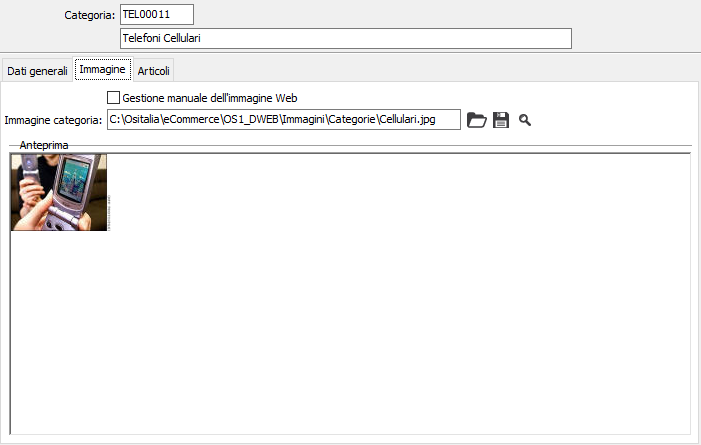
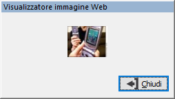

Immagine
La sezione immagine consente di acquisire, indicandone il percorso, l’immagine della categoria da utilizzare nell'area eCommerce del web.

GESTIONE MANUALE DELL'IMMAGINE WEB: definisce che l'immagine non sia generata automaticamente e disabilita il relativo pulsante.
Pulsante utilizzato per la generazione dell'immagine web; utilizzando l'immagine relativa alla categoria attiva crea un'immagine adatta ad essere pubblicata su Web in base alle informazioni presenti in configurazione eCommerce. Non è attivo se presente la spunta sul campo 'Gestione manuale dell'immagine Web'.
Pulsante utilizzato per visualizzare l'immagine web, creata con l'ausilio del pulsante precedente o manualmente. Viene visualizzata una finestra dove viene visualizzata l'immagine per il web.
